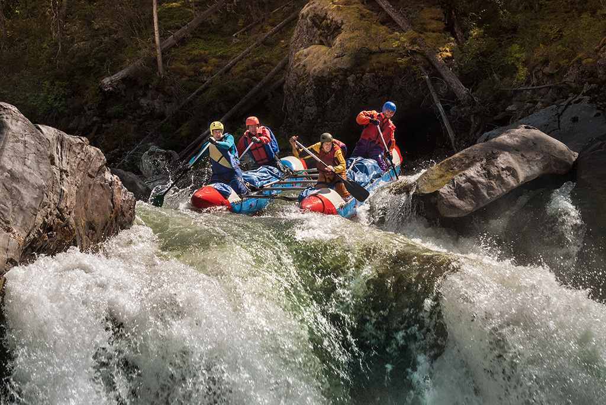

Our mission is to provide thrilling, safe, and unforgettable white water rafting Experiences. We believe adventure builds confidence, teamwork, and memories that Last a lifetime.

White Water Rafting Co.
History
Founded in 1998, White Water Rafting Co. began as a passionate group of river enthusiasts who shared a simple dream: to bring the thrill of the rapids to adventurers of all ages. What started as a small, grassroots operation quickly grew into a respected name in outdoor recreation, thanks to our unwavering commitment to safety, professionalism, and unforgettable experiences. In the early years, we focused on a handful of local rivers, building strong relationships with communities and earning the trust of rafters who returned year after year. As demand grew, so did our offerings—expanding into multi‑day expeditions, family‑friendly tours, corporate team‑building adventures, and specialized training programs for those eager to master the art of rafting. Over the decades, we have invested in state‑of‑the‑art equipment, highly trained guides, and sustainable practices that protect the rivers we love, ensuring that future generations can enjoy them too. Today, White Water Rafting Co. proudly serves thousands of happy rafters annually, blending the excitement of adventure with the reassurance of expertise. From first‑time paddlers to seasoned thrill‑seekers, we continue to inspire a deep appreciation for nature, camaraderie, and the pure exhilaration of navigating the untamed waters.
As White Water Rafting Co. entered the new millennium, our vision broadened beyond simply offering thrilling rides down the river. We recognized the importance of building a community of adventurers who valued not only the excitement of rafting but also the preservation of the natural environments that make these journeys possible. This led us to develop strong partnerships with conservation groups, invest in eco‑friendly practices, and educate our guests on the importance of protecting waterways. Our guides became more than leaders on the river—they became storytellers, safety experts, and ambassadors of the outdoors, ensuring every trip was both exhilarating and deeply meaningful. With each passing year, we expanded our reach, welcoming international visitors and introducing innovative experiences such as night rafting, wilderness camping, and cultural immersion tours that highlight the traditions of local river communities. Our dedication to excellence has earned us industry recognition and countless testimonials from rafters whose lives were touched by the adventure. Today, White Water Rafting Co. stands as a symbol of passion, resilience, and respect for nature, continuing to grow while staying true to the spirit of exploration that inspired our founding in 1998.
Adventure Awaits You!